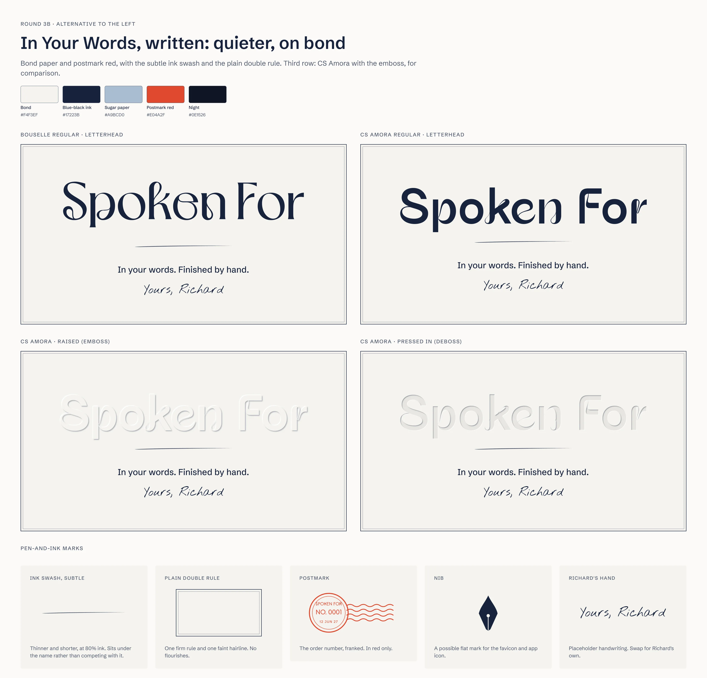
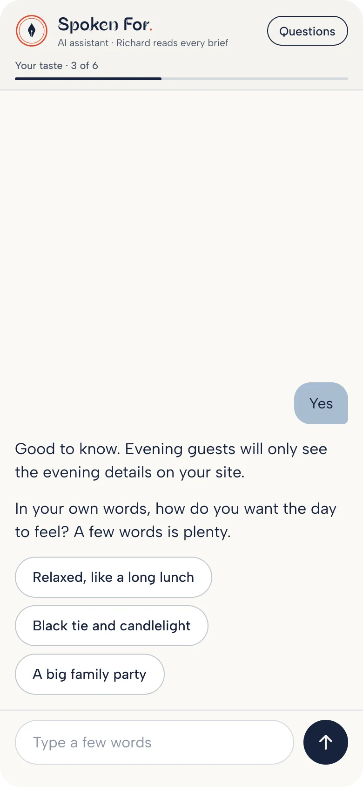
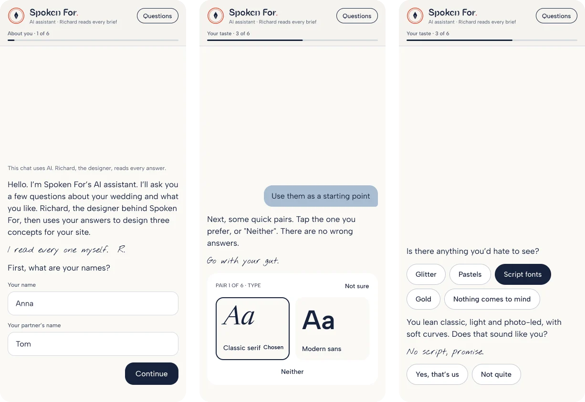
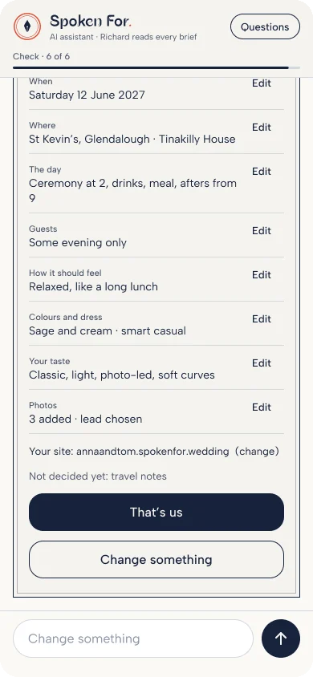
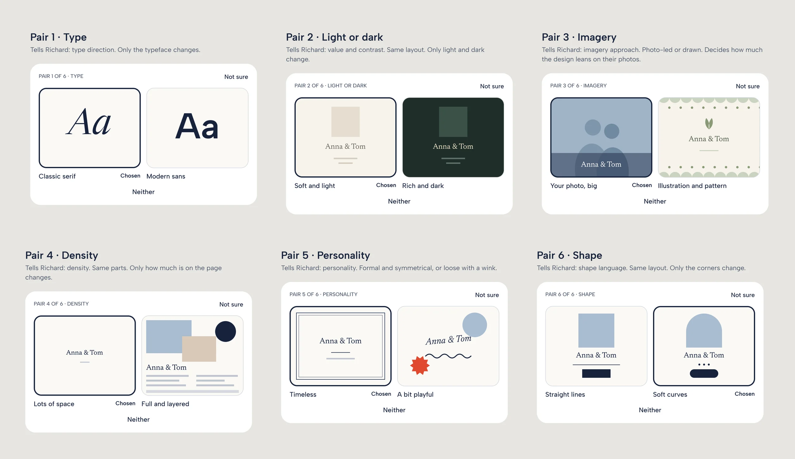
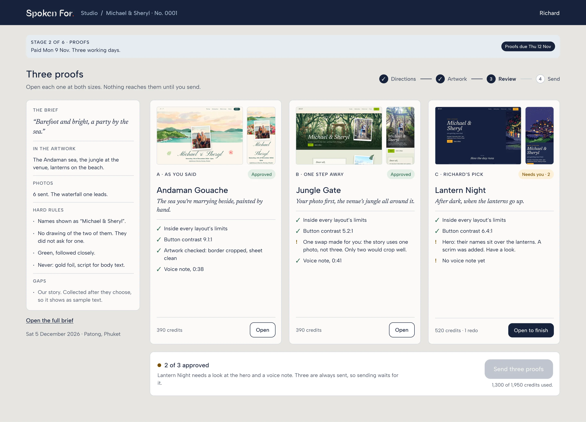
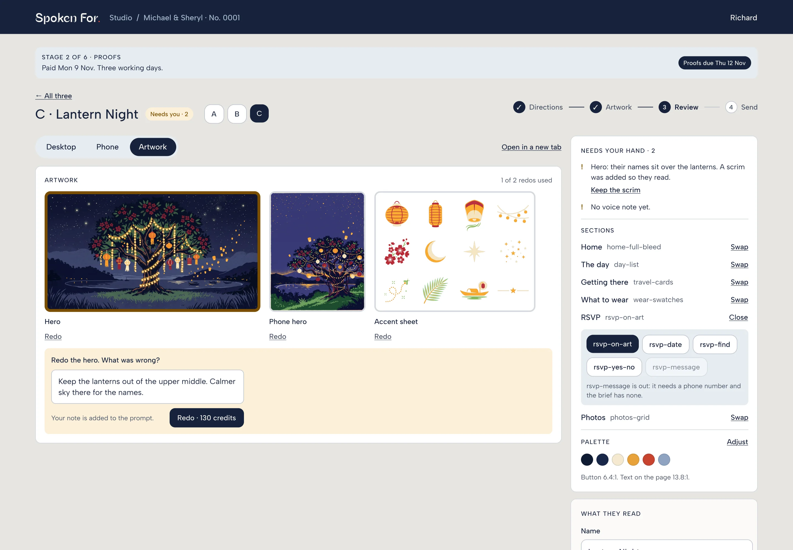
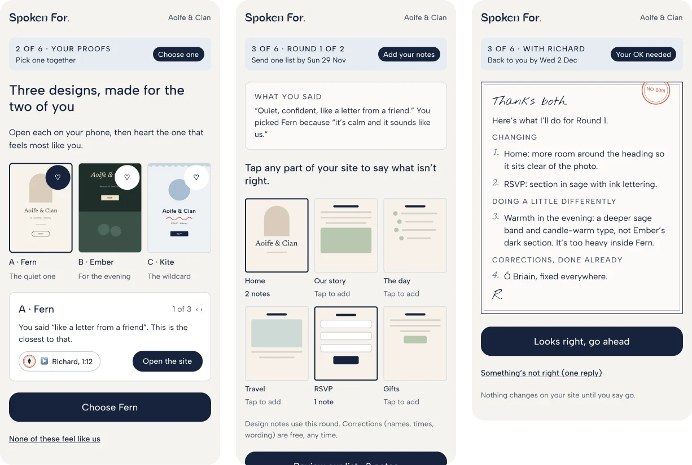

It began with my brother's wedding
My brother Mike is marrying Sheryl in Phuket in December 2026. They needed a website for guests travelling from Ireland and beyond, so I offered to make one.
The brief came over WhatsApp. I designed three concepts, each with its own artwork: Andaman Gouache, Jungle Linocut and Lantern Night. They chose Andaman Gouache, then asked for their own photo in place of the illustrated portrait. Mike didn't love how he looked drawn, which turned out to be a useful lesson in itself.
The site went live on their own domain, michaelandsheryl.com, with the schedule, travel and stay, dress colours, gift guidance and a guest photo upload.
To be straight about it: my first client was family, the brief was a WhatsApp thread, and he didn't pay. It's a sample of one. What it gave me was a clear look at where the time and friction went, which is what the rest of this project is built on.
What it taught me
- RSVPs over WhatsApp left the couple counting replies by hand. That's the case for RSVP by household, built in.
- Feedback over WhatsApp and email drifted. That's the case for a client area with structured rounds.
- Most of my time went on the first direction, not the build. A better brief up front should cut the back and forth.
- Couples mostly want their own photo. Illustration works best as a style choice, not the default.
Designer-led, AI-assisted
Free wedding site builders exist. They're good at forms and bad at feeling like anyone in particular.
Spoken For sits in between a template and a commission. A couple has a short chat, then gets three designed concepts within 3 working days, each with artwork made for their wedding. They pick one, send two rounds of changes, and their guests get a site with RSVPs, travel and gifts built in.
AI does the heavy lifting: collecting the brief, generating artwork, drafting layouts. I review and finish every site. The chat says so in its first message.
Three things I'm trying to prove
Couples will pay about €295 for a designed site when free ones exist.
I can deliver one in about 2 hours of my time, with AI doing most of the work.
A good brief up front cuts the design back and forth.
In Your Words
The brand is a letter, not an invitation. Blue-black ink on bond paper, a plain double-rule border, a tapered ink swash and a red postmark that carries each couple's order number.
Wedding brands drift towards script, gold and flourish. I wanted the opposite: something that feels like a person wrote to you. Letter conventions appear only at moments of address (the greeting, the reveal of three proofs, the sign-off). Payment, refunds and privacy stay in plain language.
Dear Anna and Tom,
here are your three. Yours, Richard
No. 0001
For
Reversed lockup, stacked lockup for square spaces, and the app icon. The full stop is a single ink dot in postmark red, very slightly uneven, like a pen pressed once. Red is the only accent.
What I said no to
Directions and details tried and dropped along the way. Each one read as wedding stationery, a clothing label, or decoration for its own sake.

The assistant asks. Richard designs.
The brief is the most important part of the job, so I built a chat that collects it on a phone in about ten minutes.
It's a guided conversation, not a free-roaming bot. Claude words each question and fills a typed brief schema through tool calls (next_step, save_answer, flag_for_richard). It doesn't choose what to ask next, and it doesn't design anything.
Rules I gave it
- Says it's an AI in its first message, and uses my name throughout.
- One question per message. Every step can be skipped with "Not sure yet".
- Taps for choices, free text for feelings.
- Never asks for bank details, guest names or dietary information.
- Never promises a design outcome, a price or a delivery time it can't keep.
- Irish spelling, no wedding clichés, never assumes a bride and groom.

The 17 steps
Grouped under six plain progress labels: About you · The day · Your taste · Photos · Practical · Check.
- Names
- How the names appear
- Email (so progress is saved)
- Date
- Venues
- Shape of the day and rough times
- Evening-only guests
- How it should feel
- What the artwork shows
- Colours and dress code
- Six taste pairs, then a playback
- Photos (now or later)
- Inspiration
- RSVP questions and children
- Gifts
- Travel and stay
- Deadline and password

Design decisions that came from testing
- Email second, not last, so an unfinished brief is still a lead and the other partner can pick it up.
- Taste tiles show the couple's own names, so they're judging their site, not a sample.
- Six pairs, each changing one thing only, with no timers, so every tap tells me something specific.
- The artwork question became two. A Greek harbour across the top reads as a wedding in Greece, even if that's only where they got engaged. So the main picture shows the venue or area, and personal things go into the small details.
- It ends with "Here's what we heard", a summary styled as a letter that the couple confirms before I design anything.


From brief to three proofs
Behind the chat is a workflow where AI produces the raw material and I make the decisions. The target is about two hours of my time per site.

I started by designing proofs in Figma. Editing them in the studio, closer to the real build, turned out to be quicker. So the studio became the main place I work, and Figma is for brand and new patterns.

Clear rules for couples, easy for guests
The client area Designed, not yet built
A proof sheet with guardrails, modelled on the client area I use for branding work. It's designed for mobile and desktop, and I'll build it after the first five sites. Until then, proofs and changes go by email.
- A round is one list from both of you, sent once. I write back what I'll do before changing anything.
- Corrections are free and separate. Names, dates, times and wording never use up a round.
- The refund stays open until you choose a proof. If none fits, I offer one fresh design first, and the refund is just as easy to pick.

Claim once, then it's yours
Guests enter the password from the invitation and their name. That ties their phone to their household and gives them a personal link they can recover by email.
RSVP by household
Meal choice and dietary notes per person, exported for the venue. Day and evening guests only see their own details.
Gifts without the middleman
Guests write a card, then pay the couple directly with the couple's own payment link. No money passes through Spoken For.
I'm open about the trade-off: a shared password is light protection. The personal link and the rule that a reply is locked to that link close most of the gap.
Live, early, and unproven
As of November 2026, Spoken For is live and taking couples by invitation. No couple has paid yet.
The first four couples get their site free in return for honest feedback, a testimonial and permission to show their work. Payment isn't switched on until those are delivered, and I'll judge the idea on the numbers, not on how much I like it.
- Live Brand, landing page, AI brief chat
- Live First case study site (michaelandsheryl.com)
- In progress Couple site template, first free couples, partner outreach
- Later Client area build, payments
How I'll know if it's working
| Measure | Healthy | Rethink |
|---|---|---|
| Completed briefs that pay | 3 in 10+ | Under 3 in 10 |
| Couples who pick a proof without a redo | 7 in 10 | Under 4 in 10 |
| My hours per site by site 10 | 2 or under | Over 4 |
| Change rounds used | 2 or fewer | Regularly over 2 |
| Refunds after concepts | 1 in 10 or fewer | Over 2 in 10 |
I'll update this page with real numbers once the first couples are through.
Weddings first, small businesses next
Weddings are the workflow lab. They're a good category to start with: a fixed deadline, clear needs, and couples who care how things look.
Once around ten wedding sites are delivered, the same brief chat gets a new set of questions for small businesses: a sole trader, a clinic, a studio. Same idea, different category. A short conversation, a designer's eye, and a site that feels like it belongs to the person who runs it.
The aim isn't to build another drag-and-drop builder. It's to find out how much of a designer's judgement can be kept while AI does the repetitive work, and to keep the result simple, honest and meaningful.
Notes to self
- Be honest about the AI. Saying it's an AI and naming the designer made the chat feel more trustworthy, not less.
- Constrain the model, not the couple. A fixed question order and a typed schema made the AI predictable. The couple still answers in their own words.
- Design the rules, not just the screens. What counts as a round, when a refund closes, and who sees a guest's reply mattered as much as any layout.
- Work where the work happens. Moving proofs out of Figma and into the studio saved more time than any prompt did.
- A family client is a start, not proof. The real test is strangers who pay.
See it live
The studio and the first case study site.
Spoken For is a trading name of Treble Games Limited, registered in Ireland.